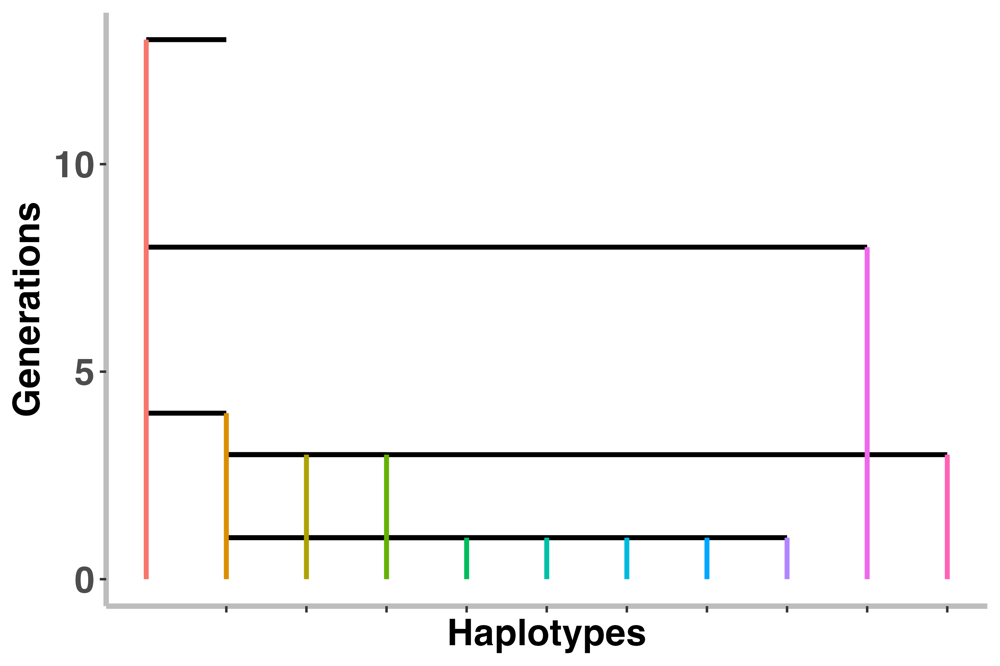

Structured DTWF Malaria Model Overview
Source:vignettes/orig_mod_framework.Rmd
orig_mod_framework.RmdPurpose
The purpose of the polySimIBD package is to perform forwards in-time simulation of malaria population genetics. The model uses a discrete-time, discrete-loci structured Wright Fisher approximation to account for (simplified) malaria transmission dynamics.
A Brief Primer on Malaria Genetics
The need for a malaria-specific simulator is primarily due to the complex life-cycle of malaria and the phenomenon of multiple strains potentially infecting a single human host (“Complexity of Infection, or Multiplicity of Infection”). As part of the malaria life-cycle, parasite ploidy switches from haploid in the human host to diploid in the mosquito vector midgut. It is during this diploid stage that recombination occurs between parasites. However, not all recombination results in unique progeny, or unique haplotypes. For example, if only a single haplotype is present in the mosquito midgut (i.e. a monoclonal infection), all recombination events will “look” the same, as there is no variation for recombination to act upon. In contrast, if more than one haplotype is present in the mosquito midgut (i.e. a polyclonal infection), recombination will produce unique progeny.
In a similar framework, hosts can then be infected with monoclonal or polyclonal infections depending on the number of infectious bites they receive and the number of unique haplotypes within the mosquito vector at the time of the infectious bite. Polyclonal infections can result either from:
- Multiple infectious bites transferring unique haplotypes (Superinfection)
- A single infectious bite transferring multiple haplotypes (Co-Transmission)

A very, very Brief Primer on the Coalescent
Coalescent theory is one of the central pillars of population genetics and is a vast subject (see Wakeley’s classic textbook, Coalescent Theory: An Introduction). Essentially, coalescent theory provides a framework for how loci (genes, individuals, etc.) have been derived from a common ancestor backwards in time, classically using the assumptions of the Wright-Fisher model. One of the main assumptions of the coalescence, is that loci are independent and that no recombination is occurring between loci. To relax this assumption, we must consider the coalescence with recombination. In this framework, a single coalescent tree is no longer representative of the genome (NB: genomes are now combination of genes on intervals [0, L) ; [L, L_{+1}], see Griffiths & Marjoram 1996 for further details). As a result, each loci in the gene interval has a marginal tree due recombination resulting in different genealogical histories of loci. The collection of these trees with respect to recombination breakpoints among loci in the gene interval is termed the Ancestral Recombination Graph (ARG).

Model Formulation
The full mathematical formulation of this (nonspatial) model can be found in the Supplementary Section of Verity, Aydemic, Brazeau et al. Nat Comms 2020 (PMC7192906), Biorxiv. As a brief lay summary, we assume that each individual host can be represented by a deme, or a subpopulation within a large population (\(i \in N\), where \(i\) is an individual host and \(N\) is the total host population). We then allow the \(J\) parasites (that reside within the host population) to mate at random with the previous generation of parasites (\(t_{1-}\)) and produce a large number of parasite progeny. During mating, genetic recombination has the potential to occur based on the length of the genome and the recombination rate, \(\rho\). Progeny are then allowed to migrate to a new or the same host with a probability of \(\frac{m}{N}\). Progeny are then culled down to a smaller number of parasites per host by drawing from a Poisson distribution with a mean COI (schematic below). Overall, the simulator is best described as a discrete-loci, discrete-time structured Wright Fisher model.

As can be seen from the schematic, the user-specified probability of migration, \(m\), has an effect on whether or not the transmission dynamic favors Superinfection (“panmictic”) or Contransmission (“independent”) setting.
Understanding the Simulator
Users are able to specify loci positions, pos, the number of Hosts in the population, N, the probability of migration, m, the recombination rate, rho, and the Mean COI for host parasite burden (culling of the progeny), mean_coi. Finally, users have the option to let the model run forwards in time until all parasites have coalesced to a single common ancestor (tlim = Inf), or can set a limit on the number of generations that we simulate (tlim = <integer>).
set.seed(1)
swfsim <- sim_swf(pos = seq(1, 1e3, 1e2),
N = 2,
m = 0.5,
rho = 1e-3,
mean_coi = 2,
migr_dist_mat = 1, # nonspatial
tlim = 10)
#> completed in 0.000144 secondsThe discrete-loci, discrete-time structured Wright Fisher simulation outputs six objets: 1. A vector of COIs, where each item in the vector is the number of parasites within a given host 2. A list of recombination blocks for each generation for each haplotype 3. The host and parental assignments for the “maternal” and “paternal” haplotype, respectively.
The output of this function is largely for internal use and is intended to be parsed with the get_arg function (next section).
Getting the ARG
Using the ancestry matrices produced above, we can derive the most recent common ancestor (MRCA) and the time of MRCA coalescent event for each parasite (i.e. haplotype) at each discrete loci. As such, we are recreating a marginal tree for each loci and then collectively storing the entire set of marginal trees, termed the ancestral recombination graph.
ARG <- get_arg(swfsim)
#> completed in 0.000042 secondsThe get_arg function takes the output from the discrete-loci, discrete-time structured Wright Fisher simulation above and produces bv_trees, an S4 class, for each loci.
bv_tree Class
The bv_tree class is a lightweight representation of a marginal tree. The bv_tree class contains three slots:
-
c: The node connection for each haplotype (each haplotype is an element in a vector) -
t: The timing of the node connection (time to MRCA) -
z: The order of coalescence for each set of haplotypes
Visualizing the Simulation
Here, we will visualize the maringal tree for each loci. Users are able to specify which loci to visualize. Of note, you will only be able to visualize the marginal trees for the parasites that you created the ARG for in the previous section.

Adding Mutations
Finally, we can layer mutations on to each marginal tree (and the overall ARG) based on the total branch length of the coalescent tree and the user specificed per-recombination block mutation rate.
hapmat <- polySimIBD::layer_mutations_on_ARG(ARG, mutationrate = 0.1)
hapmat <- cbind(POS = swfsim$pos, hapmat)
colnames(hapmat) <- c("POS", paste0("parasite", 1:(ncol(hapmat)-1)))
knitr::kable(hapmat)| POS | parasite1 | parasite2 | parasite3 |
|---|---|---|---|
| 1 | 0 | 1 | 1 |
| 101 | 0 | 1 | 1 |
| 201 | 0 | 1 | 1 |
| 301 | 0 | 1 | 1 |
| 401 | 0 | 1 | 1 |
| 501 | 0 | 1 | 1 |
| 601 | 0 | 0 | 1 |
| 701 | 0 | 0 | 1 |
| 801 | 0 | 0 | 0 |
| 901 | 0 | 1 | 1 |
Conclusion
Up until this point, we have ignored within host COI and have only analyzed parasites as independent infections. In the next vignette Simulating Data, we will explore how to convert our marginal tree and forward model into genomic data.
You may have noticed that our coalescent trees (bvtree class) always coalesce “right”. This is intentional and an approach to optimize looping through ancestries to get the ARG. As a result, remember that not every intersection is a true node (e.g. lines can “jump” over other lines).